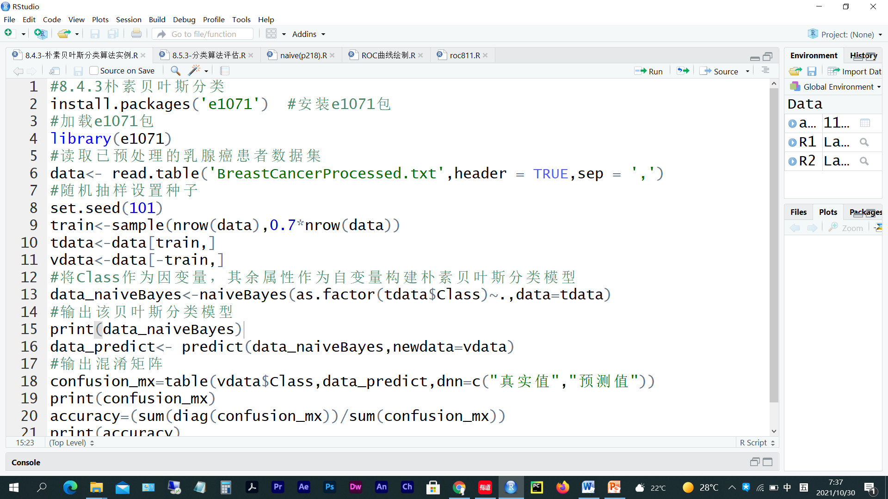
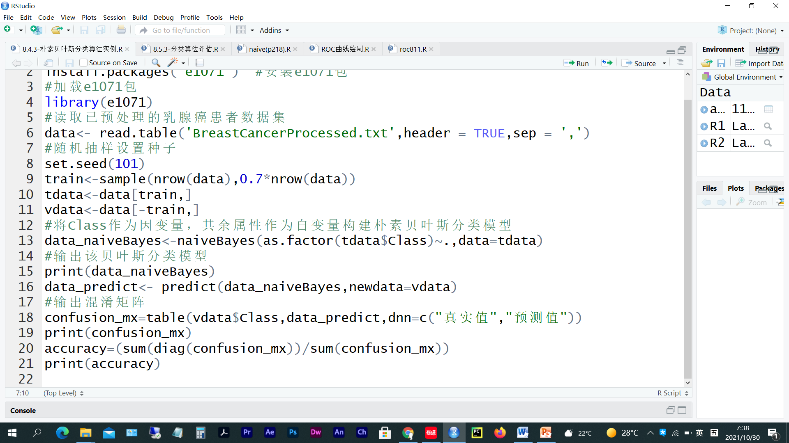
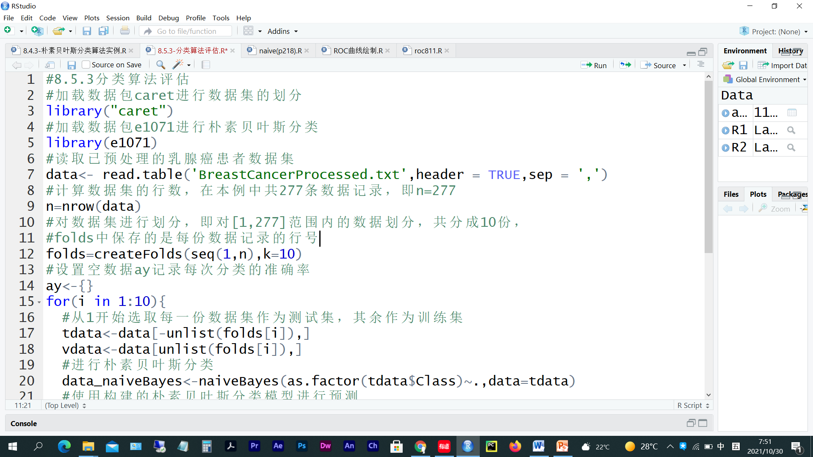
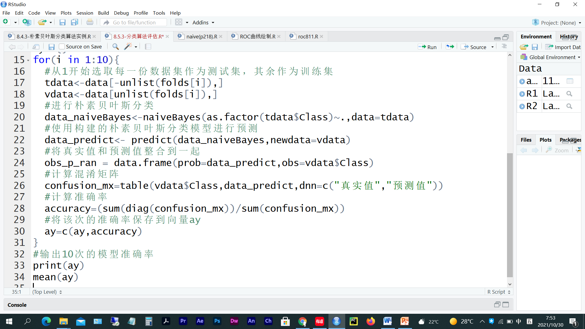
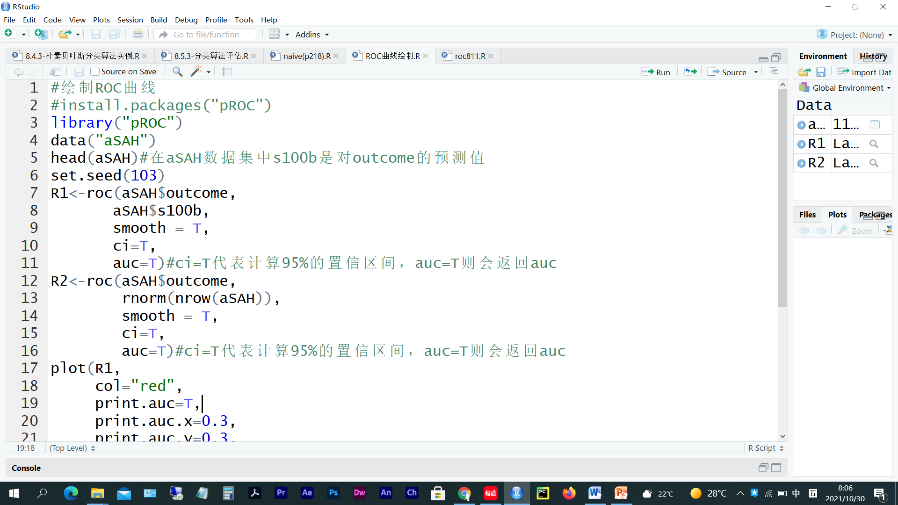
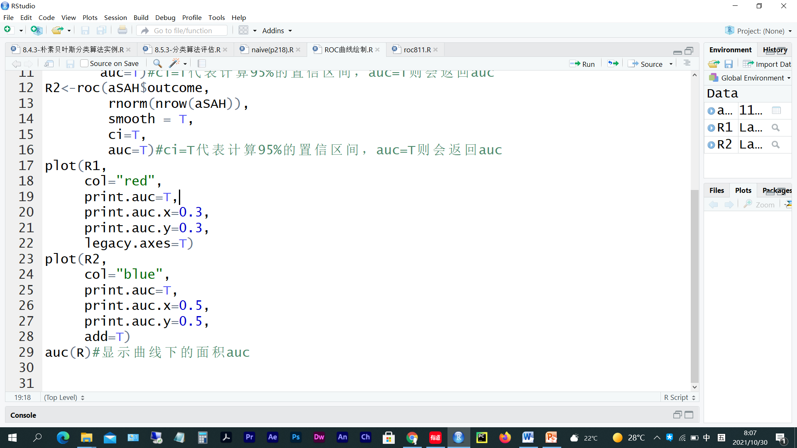
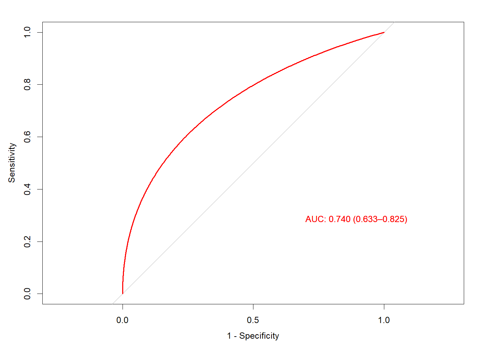
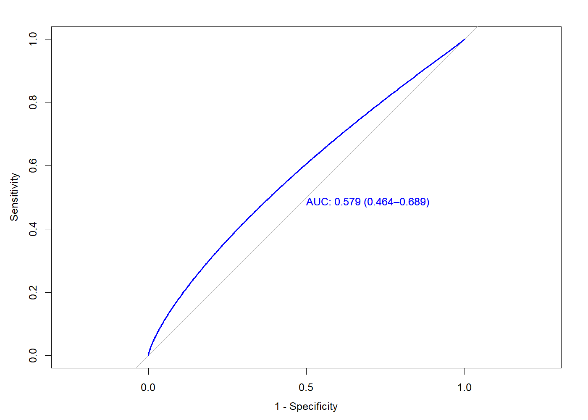
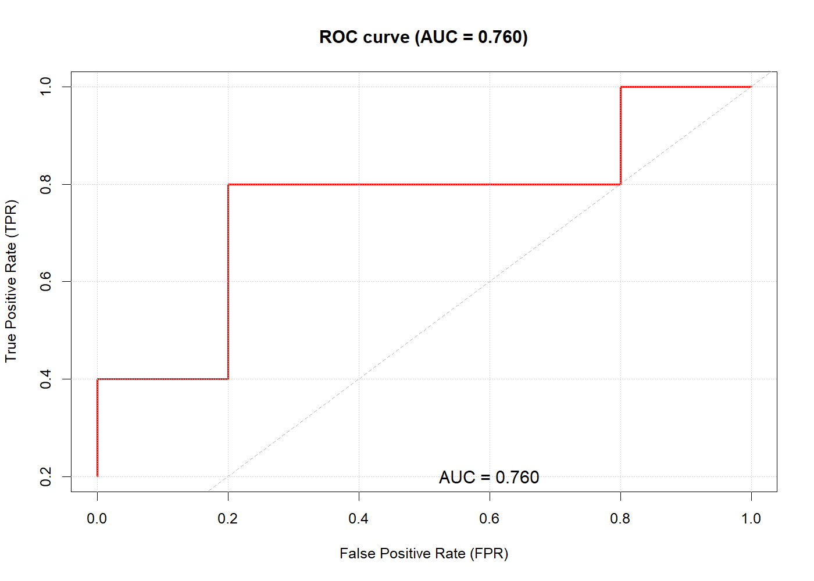

> 本文件由 `大数据实验6.pptx` 整理而成；
> 课件本身（.pptx）未收录进本仓库；文中的图片是幻灯片里原有的公式与数据表。


#install.packages('e1701')
library(e1071)
data = read.table('BreastCancerProcessed.txt',header = T,sep = ',')
set.seed(101)
train = sample(nrow(data),0.7*nrow(data))
tdata = data[train,]
vdata = data[-train,]
data_naiveBayes = naiveBayes(as.factor(tdata$Class)~.,data = tdata)
print(data_naiveBayes)
data_predict = predict(data_naiveBayes,newdata = vdata)
confusion_mx = table(vdata$Class,data_predict,dnn = c('真实值','预测值'))
print(confusion_mx)
accuracy = (sum(diag(confusion_mx))/sum(confusion_mx))
print(accuracy)
Naive Bayes Classifier for Discrete Predictors
Call:
naiveBayes.default(x = X, y = Y, laplace = laplace)
A-priori probabilities:
Y
C0 C1
0.5129534 0.4870466
Conditional probabilities:
Age
Y A2 A3 A4 A5 A6 A7
C0 0.00000000 0.11111111 0.31313131 0.38383838 0.16161616 0.03030303
C1 0.01063830 0.19148936 0.28723404 0.34042553 0.17021277 0.00000000
Menopause
Y M1 M2 M3
C0 0.03030303 0.42424242 0.54545455
C1 0.00000000 0.43617021 0.56382979
TumorSize
Y T1 T10 T11 T2 T3 T4 T5 T6
C0 0.05050505 0.00000000 0.01010101 0.03030303 0.18181818 0.16161616 0.23232323 0.22222222
C1 0.01063830 0.02127660 0.04255319 0.00000000 0.01063830 0.04255319 0.09574468 0.14893617
TumorSize
Y T7 T8 T9
C0 0.07070707 0.01010101 0.03030303
C1 0.35106383 0.13829787 0.13829787
InvNodes
Y IN1 IN2 IN3 IN4 IN5 IN6 IN7
C0 0.87878788 0.09090909 0.01010101 0.00000000 0.01010101 0.01010101 0.00000000
C1 0.56382979 0.19148936 0.14893617 0.04255319 0.01063830 0.03191489 0.01063830
NodeCaps
Y N0 N1
C0 0.94949495 0.05050505
C1 0.67021277 0.32978723
DegMalig
Y D1 D2 D3
C0 0.43434343 0.44444444 0.12121212
C1 0.05319149 0.48936170 0.45744681
BreastQuad
Y BQ1 BQ2 BQ3 BQ4 BQ5
C0 0.29292929 0.39393939 0.09090909 0.12121212 0.10101010
C1 0.31914894 0.40425532 0.18085106 0.06382979 0.03191489
Irradiat
Y IR0 IR1
C0 0.8686869 0.1313131
C1 0.6382979 0.3617021
预测值
真实值 C0 C1
C0 42 4
C1 8 30
[1] 0.8571429


install.packages('recipes')
library('caret')
library(e1071)
data = read.table('BreastCancerProcessed.txt',header = T,sep = ',')
n = nrow(data)
folds = createFolds(seq(1,n),k=10)
ay = {}
for (i in 1:10) {
tdata = data[-unlist(folds[i]),]
vdata = data[unlist(folds[i]),]
data_naiveBayes = naiveBayes(as.factor(tdata$Class)~.,data = tdata)
data_predict = predict(data_naiveBayes,newdata = vdata)
obs_p_ran = data.frame(prob = data_predict,obs = vdata$Class)
confusion_mx = table(vdata$Class,data_predict,dnn = c('真实值','预测值'))
accuracy = (sum(diag(confusion_mx))/sum(confusion_mx))
ay = c(ay,accuracy)
}
print(ay)
mean(ay)
package 'recipes' successfully unpacked and MD5 sums checked The downloaded binary packages are in <本机临时目录> [1] 0.8928571 0.9259259 0.9285714 0.8928571 0.7857143 0.8888889 0.8214286 0.8148148 0.6071429 [10] 0.7857143 [1] 0.8343915


#install.packages('pROC')
library('pROC')
data('aSAH')
set.seed(103)
R1 = roc(aSAH$outcome,
aSAH$s100b,
smooth = T,
ci = T,
auc = T)
R2 = roc(aSAH$outcome,
rnorm(nrow(aSAH)),
smooth =T,
ci = T,
auc = T)
plot(R1,col = 'red',
print.auc = T,
print.auc.x = 0.3,
print.auc.y = 0.3,
legacy.axes = T)
plot(R2,col = 'blue',
print.auc = T,
print.auc.x = 0.5,
print.auc.y = 0.5,
legacy.axes = T)
auc(R1)
auc(R2)
Area under the curve: 0.74 Area under the curve: 0.5788


| <a:txBody><a:bodyPr/><a:lstStyle/><a:p><a:pPr algn="ctr" fontAlgn="b"/><a:r><a:rPr lang="zh-CN" altLang="en-US" sz="2100" u="none" strike="noStrike" dirty="0"><a:effectLst/></a:rPr><a:t>元组编号 | <a:txBody><a:bodyPr/><a:lstStyle/><a:p><a:pPr algn="ctr" fontAlgn="b"/><a:r><a:rPr lang="zh-CN" altLang="en-US" sz="2100" u="none" strike="noStrike"><a:effectLst/></a:rPr><a:t>类 | <a:txBody><a:bodyPr/><a:lstStyle/><a:p><a:pPr algn="ctr" fontAlgn="b"/><a:r><a:rPr lang="zh-CN" altLang="en-US" sz="2100" u="none" strike="noStrike"><a:effectLst/></a:rPr><a:t>概率 | <a:txBody><a:bodyPr/><a:lstStyle/><a:p><a:pPr algn="ctr" fontAlgn="b"/><a:r><a:rPr lang="en-US" sz="2100" u="none" strike="noStrike"><a:effectLst/></a:rPr><a:t>TP | <a:txBody><a:bodyPr/><a:lstStyle/><a:p><a:pPr algn="ctr" fontAlgn="b"/><a:r><a:rPr lang="en-US" sz="2100" u="none" strike="noStrike"><a:effectLst/></a:rPr><a:t>FP | <a:txBody><a:bodyPr/><a:lstStyle/><a:p><a:pPr algn="ctr" fontAlgn="b"/><a:r><a:rPr lang="en-US" sz="2100" u="none" strike="noStrike"><a:effectLst/></a:rPr><a:t>TN | <a:txBody><a:bodyPr/><a:lstStyle/><a:p><a:pPr algn="ctr" fontAlgn="b"/><a:r><a:rPr lang="en-US" sz="2100" u="none" strike="noStrike"><a:effectLst/></a:rPr><a:t>FN | <a:txBody><a:bodyPr/><a:lstStyle/><a:p><a:pPr algn="ctr" fontAlgn="b"/><a:r><a:rPr lang="en-US" sz="2100" u="none" strike="noStrike"><a:effectLst/></a:rPr><a:t>TPR | <a:txBody><a:bodyPr/><a:lstStyle/><a:p><a:pPr algn="ctr" fontAlgn="b"/><a:r><a:rPr lang="en-US" sz="2100" u="none" strike="noStrike"><a:effectLst/></a:rPr><a:t>FPR |
| <a:txBody><a:bodyPr/><a:lstStyle/><a:p><a:pPr algn="ctr" fontAlgn="b"/><a:r><a:rPr lang="en-US" altLang="zh-CN" sz="2100" u="none" strike="noStrike"><a:effectLst/></a:rPr><a:t>1 | <a:txBody><a:bodyPr/><a:lstStyle/><a:p><a:pPr algn="ctr" fontAlgn="b"/><a:r><a:rPr lang="en-US" sz="2100" u="none" strike="noStrike"><a:effectLst/></a:rPr><a:t>P | <a:txBody><a:bodyPr/><a:lstStyle/><a:p><a:pPr algn="ctr" fontAlgn="b"/><a:r><a:rPr lang="en-US" altLang="zh-CN" sz="2100" u="none" strike="noStrike"><a:effectLst/></a:rPr><a:t>0.90 | <a:txBody><a:bodyPr/><a:lstStyle/><a:p><a:pPr algn="r" fontAlgn="b"/><a:r><a:rPr lang="en-US" altLang="zh-CN" sz="2100" u="none" strike="noStrike"><a:effectLst/></a:rPr><a:t>1 | <a:txBody><a:bodyPr/><a:lstStyle/><a:p><a:pPr algn="r" fontAlgn="b"/><a:r><a:rPr lang="en-US" altLang="zh-CN" sz="2100" u="none" strike="noStrike"><a:effectLst/></a:rPr><a:t>0 | <a:txBody><a:bodyPr/><a:lstStyle/><a:p><a:pPr algn="r" fontAlgn="b"/><a:r><a:rPr lang="en-US" altLang="zh-CN" sz="2100" u="none" strike="noStrike"><a:effectLst/></a:rPr><a:t>5 | <a:txBody><a:bodyPr/><a:lstStyle/><a:p><a:pPr algn="r" fontAlgn="b"/><a:r><a:rPr lang="en-US" altLang="zh-CN" sz="2100" u="none" strike="noStrike"><a:effectLst/></a:rPr><a:t>4 | <a:txBody><a:bodyPr/><a:lstStyle/><a:p><a:pPr algn="r" fontAlgn="b"/><a:r><a:rPr lang="en-US" altLang="zh-CN" sz="2100" u="none" strike="noStrike"><a:effectLst/></a:rPr><a:t>0.2 | <a:txBody><a:bodyPr/><a:lstStyle/><a:p><a:pPr algn="r" fontAlgn="b"/><a:r><a:rPr lang="en-US" altLang="zh-CN" sz="2100" u="none" strike="noStrike"><a:effectLst/></a:rPr><a:t>0.0 |
| <a:txBody><a:bodyPr/><a:lstStyle/><a:p><a:pPr algn="ctr" fontAlgn="b"/><a:r><a:rPr lang="en-US" altLang="zh-CN" sz="2100" u="none" strike="noStrike"><a:effectLst/></a:rPr><a:t>2 | <a:txBody><a:bodyPr/><a:lstStyle/><a:p><a:pPr algn="ctr" fontAlgn="b"/><a:r><a:rPr lang="en-US" sz="2100" u="none" strike="noStrike"><a:effectLst/></a:rPr><a:t>P | <a:txBody><a:bodyPr/><a:lstStyle/><a:p><a:pPr algn="ctr" fontAlgn="b"/><a:r><a:rPr lang="en-US" altLang="zh-CN" sz="2100" u="none" strike="noStrike"><a:effectLst/></a:rPr><a:t>0.80 | <a:txBody><a:bodyPr/><a:lstStyle/><a:p><a:pPr algn="r" fontAlgn="b"/><a:r><a:rPr lang="en-US" altLang="zh-CN" sz="2100" u="none" strike="noStrike"><a:effectLst/></a:rPr><a:t>2 | <a:txBody><a:bodyPr/><a:lstStyle/><a:p><a:pPr algn="r" fontAlgn="b"/><a:r><a:rPr lang="en-US" altLang="zh-CN" sz="2100" u="none" strike="noStrike"><a:effectLst/></a:rPr><a:t>0 | <a:txBody><a:bodyPr/><a:lstStyle/><a:p><a:pPr algn="r" fontAlgn="b"/><a:r><a:rPr lang="en-US" altLang="zh-CN" sz="2100" u="none" strike="noStrike"><a:effectLst/></a:rPr><a:t>5 | <a:txBody><a:bodyPr/><a:lstStyle/><a:p><a:pPr algn="r" fontAlgn="b"/><a:r><a:rPr lang="en-US" altLang="zh-CN" sz="2100" u="none" strike="noStrike"><a:effectLst/></a:rPr><a:t>3 | <a:txBody><a:bodyPr/><a:lstStyle/><a:p><a:pPr algn="r" fontAlgn="b"/><a:r><a:rPr lang="en-US" altLang="zh-CN" sz="2100" u="none" strike="noStrike"><a:effectLst/></a:rPr><a:t>0.4 | <a:txBody><a:bodyPr/><a:lstStyle/><a:p><a:pPr algn="r" fontAlgn="b"/><a:r><a:rPr lang="en-US" altLang="zh-CN" sz="2100" u="none" strike="noStrike" dirty="0"><a:effectLst/></a:rPr><a:t>0.0 |
| <a:txBody><a:bodyPr/><a:lstStyle/><a:p><a:pPr algn="ctr" fontAlgn="b"/><a:r><a:rPr lang="en-US" altLang="zh-CN" sz="2100" u="none" strike="noStrike"><a:effectLst/></a:rPr><a:t>3 | <a:txBody><a:bodyPr/><a:lstStyle/><a:p><a:pPr algn="ctr" fontAlgn="b"/><a:r><a:rPr lang="en-US" sz="2100" u="none" strike="noStrike"><a:effectLst/></a:rPr><a:t>N | <a:txBody><a:bodyPr/><a:lstStyle/><a:p><a:pPr algn="ctr" fontAlgn="b"/><a:r><a:rPr lang="en-US" altLang="zh-CN" sz="2100" u="none" strike="noStrike"><a:effectLst/></a:rPr><a:t>0.70 | <a:txBody><a:bodyPr/><a:lstStyle/><a:p><a:pPr algn="r" fontAlgn="b"/><a:r><a:rPr lang="en-US" altLang="zh-CN" sz="2100" u="none" strike="noStrike"><a:effectLst/></a:rPr><a:t>2 | <a:txBody><a:bodyPr/><a:lstStyle/><a:p><a:pPr algn="r" fontAlgn="b"/><a:r><a:rPr lang="en-US" altLang="zh-CN" sz="2100" u="none" strike="noStrike"><a:effectLst/></a:rPr><a:t>1 | <a:txBody><a:bodyPr/><a:lstStyle/><a:p><a:pPr algn="r" fontAlgn="b"/><a:r><a:rPr lang="en-US" altLang="zh-CN" sz="2100" u="none" strike="noStrike"><a:effectLst/></a:rPr><a:t>4 | <a:txBody><a:bodyPr/><a:lstStyle/><a:p><a:pPr algn="r" fontAlgn="b"/><a:r><a:rPr lang="en-US" altLang="zh-CN" sz="2100" u="none" strike="noStrike"><a:effectLst/></a:rPr><a:t>3 | <a:txBody><a:bodyPr/><a:lstStyle/><a:p><a:pPr algn="r" fontAlgn="b"/><a:r><a:rPr lang="en-US" altLang="zh-CN" sz="2100" u="none" strike="noStrike"><a:effectLst/></a:rPr><a:t>0.4 | <a:txBody><a:bodyPr/><a:lstStyle/><a:p><a:pPr algn="r" fontAlgn="b"/><a:r><a:rPr lang="en-US" altLang="zh-CN" sz="2100" u="none" strike="noStrike"><a:effectLst/></a:rPr><a:t>0.2 |
| <a:txBody><a:bodyPr/><a:lstStyle/><a:p><a:pPr algn="ctr" fontAlgn="b"/><a:r><a:rPr lang="en-US" altLang="zh-CN" sz="2100" u="none" strike="noStrike"><a:effectLst/></a:rPr><a:t>4 | <a:txBody><a:bodyPr/><a:lstStyle/><a:p><a:pPr algn="ctr" fontAlgn="b"/><a:r><a:rPr lang="en-US" sz="2100" u="none" strike="noStrike"><a:effectLst/></a:rPr><a:t>P | <a:txBody><a:bodyPr/><a:lstStyle/><a:p><a:pPr algn="ctr" fontAlgn="b"/><a:r><a:rPr lang="en-US" altLang="zh-CN" sz="2100" u="none" strike="noStrike"><a:effectLst/></a:rPr><a:t>0.60 | <a:txBody><a:bodyPr/><a:lstStyle/><a:p><a:pPr algn="r" fontAlgn="b"/><a:r><a:rPr lang="en-US" altLang="zh-CN" sz="2100" u="none" strike="noStrike"><a:effectLst/></a:rPr><a:t>3 | <a:txBody><a:bodyPr/><a:lstStyle/><a:p><a:pPr algn="r" fontAlgn="b"/><a:r><a:rPr lang="en-US" altLang="zh-CN" sz="2100" u="none" strike="noStrike"><a:effectLst/></a:rPr><a:t>1 | <a:txBody><a:bodyPr/><a:lstStyle/><a:p><a:pPr algn="r" fontAlgn="b"/><a:r><a:rPr lang="en-US" altLang="zh-CN" sz="2100" u="none" strike="noStrike"><a:effectLst/></a:rPr><a:t>4 | <a:txBody><a:bodyPr/><a:lstStyle/><a:p><a:pPr algn="r" fontAlgn="b"/><a:r><a:rPr lang="en-US" altLang="zh-CN" sz="2100" u="none" strike="noStrike"><a:effectLst/></a:rPr><a:t>2 | <a:txBody><a:bodyPr/><a:lstStyle/><a:p><a:pPr algn="r" fontAlgn="b"/><a:r><a:rPr lang="en-US" altLang="zh-CN" sz="2100" u="none" strike="noStrike"><a:effectLst/></a:rPr><a:t>0.6 | <a:txBody><a:bodyPr/><a:lstStyle/><a:p><a:pPr algn="r" fontAlgn="b"/><a:r><a:rPr lang="en-US" altLang="zh-CN" sz="2100" u="none" strike="noStrike"><a:effectLst/></a:rPr><a:t>0.2 |
| <a:txBody><a:bodyPr/><a:lstStyle/><a:p><a:pPr algn="ctr" fontAlgn="b"/><a:r><a:rPr lang="en-US" altLang="zh-CN" sz="2100" u="none" strike="noStrike"><a:effectLst/></a:rPr><a:t>5 | <a:txBody><a:bodyPr/><a:lstStyle/><a:p><a:pPr algn="ctr" fontAlgn="b"/><a:r><a:rPr lang="en-US" sz="2100" u="none" strike="noStrike"><a:effectLst/></a:rPr><a:t>P | <a:txBody><a:bodyPr/><a:lstStyle/><a:p><a:pPr algn="ctr" fontAlgn="b"/><a:r><a:rPr lang="en-US" altLang="zh-CN" sz="2100" u="none" strike="noStrike"><a:effectLst/></a:rPr><a:t>0.55 | <a:txBody><a:bodyPr/><a:lstStyle/><a:p><a:pPr algn="r" fontAlgn="b"/><a:r><a:rPr lang="en-US" altLang="zh-CN" sz="2100" u="none" strike="noStrike"><a:effectLst/></a:rPr><a:t>4 | <a:txBody><a:bodyPr/><a:lstStyle/><a:p><a:pPr algn="r" fontAlgn="b"/><a:r><a:rPr lang="en-US" altLang="zh-CN" sz="2100" u="none" strike="noStrike"><a:effectLst/></a:rPr><a:t>1 | <a:txBody><a:bodyPr/><a:lstStyle/><a:p><a:pPr algn="r" fontAlgn="b"/><a:r><a:rPr lang="en-US" altLang="zh-CN" sz="2100" u="none" strike="noStrike"><a:effectLst/></a:rPr><a:t>4 | <a:txBody><a:bodyPr/><a:lstStyle/><a:p><a:pPr algn="r" fontAlgn="b"/><a:r><a:rPr lang="en-US" altLang="zh-CN" sz="2100" u="none" strike="noStrike"><a:effectLst/></a:rPr><a:t>1 | <a:txBody><a:bodyPr/><a:lstStyle/><a:p><a:pPr algn="r" fontAlgn="b"/><a:r><a:rPr lang="en-US" altLang="zh-CN" sz="2100" u="none" strike="noStrike"><a:effectLst/></a:rPr><a:t>0.8 | <a:txBody><a:bodyPr/><a:lstStyle/><a:p><a:pPr algn="r" fontAlgn="b"/><a:r><a:rPr lang="en-US" altLang="zh-CN" sz="2100" u="none" strike="noStrike"><a:effectLst/></a:rPr><a:t>0.2 |
| <a:txBody><a:bodyPr/><a:lstStyle/><a:p><a:pPr algn="ctr" fontAlgn="b"/><a:r><a:rPr lang="en-US" altLang="zh-CN" sz="2100" u="none" strike="noStrike"><a:effectLst/></a:rPr><a:t>6 | <a:txBody><a:bodyPr/><a:lstStyle/><a:p><a:pPr algn="ctr" fontAlgn="b"/><a:r><a:rPr lang="en-US" sz="2100" u="none" strike="noStrike"><a:effectLst/></a:rPr><a:t>N | <a:txBody><a:bodyPr/><a:lstStyle/><a:p><a:pPr algn="ctr" fontAlgn="b"/><a:r><a:rPr lang="en-US" altLang="zh-CN" sz="2100" u="none" strike="noStrike"><a:effectLst/></a:rPr><a:t>0.54 | <a:txBody><a:bodyPr/><a:lstStyle/><a:p><a:pPr algn="r" fontAlgn="b"/><a:r><a:rPr lang="en-US" altLang="zh-CN" sz="2100" u="none" strike="noStrike"><a:effectLst/></a:rPr><a:t>4 | <a:txBody><a:bodyPr/><a:lstStyle/><a:p><a:pPr algn="r" fontAlgn="b"/><a:r><a:rPr lang="en-US" altLang="zh-CN" sz="2100" u="none" strike="noStrike"><a:effectLst/></a:rPr><a:t>2 | <a:txBody><a:bodyPr/><a:lstStyle/><a:p><a:pPr algn="r" fontAlgn="b"/><a:r><a:rPr lang="en-US" altLang="zh-CN" sz="2100" u="none" strike="noStrike"><a:effectLst/></a:rPr><a:t>3 | <a:txBody><a:bodyPr/><a:lstStyle/><a:p><a:pPr algn="r" fontAlgn="b"/><a:r><a:rPr lang="en-US" altLang="zh-CN" sz="2100" u="none" strike="noStrike"><a:effectLst/></a:rPr><a:t>1 | <a:txBody><a:bodyPr/><a:lstStyle/><a:p><a:pPr algn="r" fontAlgn="b"/><a:r><a:rPr lang="en-US" altLang="zh-CN" sz="2100" u="none" strike="noStrike"><a:effectLst/></a:rPr><a:t>0.8 | <a:txBody><a:bodyPr/><a:lstStyle/><a:p><a:pPr algn="r" fontAlgn="b"/><a:r><a:rPr lang="en-US" altLang="zh-CN" sz="2100" u="none" strike="noStrike"><a:effectLst/></a:rPr><a:t>0.4 |
| <a:txBody><a:bodyPr/><a:lstStyle/><a:p><a:pPr algn="ctr" fontAlgn="b"/><a:r><a:rPr lang="en-US" altLang="zh-CN" sz="2100" u="none" strike="noStrike"><a:effectLst/></a:rPr><a:t>7 | <a:txBody><a:bodyPr/><a:lstStyle/><a:p><a:pPr algn="ctr" fontAlgn="b"/><a:r><a:rPr lang="en-US" sz="2100" u="none" strike="noStrike"><a:effectLst/></a:rPr><a:t>N | <a:txBody><a:bodyPr/><a:lstStyle/><a:p><a:pPr algn="ctr" fontAlgn="b"/><a:r><a:rPr lang="en-US" altLang="zh-CN" sz="2100" u="none" strike="noStrike"><a:effectLst/></a:rPr><a:t>0.53 | <a:txBody><a:bodyPr/><a:lstStyle/><a:p><a:pPr algn="r" fontAlgn="b"/><a:r><a:rPr lang="en-US" altLang="zh-CN" sz="2100" u="none" strike="noStrike"><a:effectLst/></a:rPr><a:t>4 | <a:txBody><a:bodyPr/><a:lstStyle/><a:p><a:pPr algn="r" fontAlgn="b"/><a:r><a:rPr lang="en-US" altLang="zh-CN" sz="2100" u="none" strike="noStrike"><a:effectLst/></a:rPr><a:t>3 | <a:txBody><a:bodyPr/><a:lstStyle/><a:p><a:pPr algn="r" fontAlgn="b"/><a:r><a:rPr lang="en-US" altLang="zh-CN" sz="2100" u="none" strike="noStrike"><a:effectLst/></a:rPr><a:t>2 | <a:txBody><a:bodyPr/><a:lstStyle/><a:p><a:pPr algn="r" fontAlgn="b"/><a:r><a:rPr lang="en-US" altLang="zh-CN" sz="2100" u="none" strike="noStrike"><a:effectLst/></a:rPr><a:t>1 | <a:txBody><a:bodyPr/><a:lstStyle/><a:p><a:pPr algn="r" fontAlgn="b"/><a:r><a:rPr lang="en-US" altLang="zh-CN" sz="2100" u="none" strike="noStrike"><a:effectLst/></a:rPr><a:t>0.8 | <a:txBody><a:bodyPr/><a:lstStyle/><a:p><a:pPr algn="r" fontAlgn="b"/><a:r><a:rPr lang="en-US" altLang="zh-CN" sz="2100" u="none" strike="noStrike"><a:effectLst/></a:rPr><a:t>0.6 |
| <a:txBody><a:bodyPr/><a:lstStyle/><a:p><a:pPr algn="ctr" fontAlgn="b"/><a:r><a:rPr lang="en-US" altLang="zh-CN" sz="2100" u="none" strike="noStrike"><a:effectLst/></a:rPr><a:t>8 | <a:txBody><a:bodyPr/><a:lstStyle/><a:p><a:pPr algn="ctr" fontAlgn="b"/><a:r><a:rPr lang="en-US" sz="2100" u="none" strike="noStrike"><a:effectLst/></a:rPr><a:t>N | <a:txBody><a:bodyPr/><a:lstStyle/><a:p><a:pPr algn="ctr" fontAlgn="b"/><a:r><a:rPr lang="en-US" altLang="zh-CN" sz="2100" u="none" strike="noStrike"><a:effectLst/></a:rPr><a:t>0.51 | <a:txBody><a:bodyPr/><a:lstStyle/><a:p><a:pPr algn="r" fontAlgn="b"/><a:r><a:rPr lang="en-US" altLang="zh-CN" sz="2100" u="none" strike="noStrike"><a:effectLst/></a:rPr><a:t>4 | <a:txBody><a:bodyPr/><a:lstStyle/><a:p><a:pPr algn="r" fontAlgn="b"/><a:r><a:rPr lang="en-US" altLang="zh-CN" sz="2100" u="none" strike="noStrike"><a:effectLst/></a:rPr><a:t>4 | <a:txBody><a:bodyPr/><a:lstStyle/><a:p><a:pPr algn="r" fontAlgn="b"/><a:r><a:rPr lang="en-US" altLang="zh-CN" sz="2100" u="none" strike="noStrike"><a:effectLst/></a:rPr><a:t>1 | <a:txBody><a:bodyPr/><a:lstStyle/><a:p><a:pPr algn="r" fontAlgn="b"/><a:r><a:rPr lang="en-US" altLang="zh-CN" sz="2100" u="none" strike="noStrike"><a:effectLst/></a:rPr><a:t>1 | <a:txBody><a:bodyPr/><a:lstStyle/><a:p><a:pPr algn="r" fontAlgn="b"/><a:r><a:rPr lang="en-US" altLang="zh-CN" sz="2100" u="none" strike="noStrike"><a:effectLst/></a:rPr><a:t>0.8 | <a:txBody><a:bodyPr/><a:lstStyle/><a:p><a:pPr algn="r" fontAlgn="b"/><a:r><a:rPr lang="en-US" altLang="zh-CN" sz="2100" u="none" strike="noStrike"><a:effectLst/></a:rPr><a:t>0.8 |
| <a:txBody><a:bodyPr/><a:lstStyle/><a:p><a:pPr algn="ctr" fontAlgn="b"/><a:r><a:rPr lang="en-US" altLang="zh-CN" sz="2100" u="none" strike="noStrike"><a:effectLst/></a:rPr><a:t>9 | <a:txBody><a:bodyPr/><a:lstStyle/><a:p><a:pPr algn="ctr" fontAlgn="b"/><a:r><a:rPr lang="en-US" sz="2100" u="none" strike="noStrike"><a:effectLst/></a:rPr><a:t>P | <a:txBody><a:bodyPr/><a:lstStyle/><a:p><a:pPr algn="ctr" fontAlgn="b"/><a:r><a:rPr lang="en-US" altLang="zh-CN" sz="2100" u="none" strike="noStrike"><a:effectLst/></a:rPr><a:t>0.50 | <a:txBody><a:bodyPr/><a:lstStyle/><a:p><a:pPr algn="r" fontAlgn="b"/><a:r><a:rPr lang="en-US" altLang="zh-CN" sz="2100" u="none" strike="noStrike"><a:effectLst/></a:rPr><a:t>5 | <a:txBody><a:bodyPr/><a:lstStyle/><a:p><a:pPr algn="r" fontAlgn="b"/><a:r><a:rPr lang="en-US" altLang="zh-CN" sz="2100" u="none" strike="noStrike"><a:effectLst/></a:rPr><a:t>4 | <a:txBody><a:bodyPr/><a:lstStyle/><a:p><a:pPr algn="r" fontAlgn="b"/><a:r><a:rPr lang="en-US" altLang="zh-CN" sz="2100" u="none" strike="noStrike"><a:effectLst/></a:rPr><a:t>1 | <a:txBody><a:bodyPr/><a:lstStyle/><a:p><a:pPr algn="r" fontAlgn="b"/><a:r><a:rPr lang="en-US" altLang="zh-CN" sz="2100" u="none" strike="noStrike"><a:effectLst/></a:rPr><a:t>0 | <a:txBody><a:bodyPr/><a:lstStyle/><a:p><a:pPr algn="r" fontAlgn="b"/><a:r><a:rPr lang="en-US" altLang="zh-CN" sz="2100" u="none" strike="noStrike"><a:effectLst/></a:rPr><a:t>1.0 | <a:txBody><a:bodyPr/><a:lstStyle/><a:p><a:pPr algn="r" fontAlgn="b"/><a:r><a:rPr lang="en-US" altLang="zh-CN" sz="2100" u="none" strike="noStrike"><a:effectLst/></a:rPr><a:t>0.8 |
| <a:txBody><a:bodyPr/><a:lstStyle/><a:p><a:pPr algn="ctr" fontAlgn="b"/><a:r><a:rPr lang="en-US" altLang="zh-CN" sz="2100" u="none" strike="noStrike"><a:effectLst/></a:rPr><a:t>10 | <a:txBody><a:bodyPr/><a:lstStyle/><a:p><a:pPr algn="ctr" fontAlgn="b"/><a:r><a:rPr lang="en-US" sz="2100" u="none" strike="noStrike"><a:effectLst/></a:rPr><a:t>N | <a:txBody><a:bodyPr/><a:lstStyle/><a:p><a:pPr algn="ctr" fontAlgn="b"/><a:r><a:rPr lang="en-US" altLang="zh-CN" sz="2100" u="none" strike="noStrike"><a:effectLst/></a:rPr><a:t>0.40 | <a:txBody><a:bodyPr/><a:lstStyle/><a:p><a:pPr algn="r" fontAlgn="b"/><a:r><a:rPr lang="en-US" altLang="zh-CN" sz="2100" u="none" strike="noStrike"><a:effectLst/></a:rPr><a:t>5 | <a:txBody><a:bodyPr/><a:lstStyle/><a:p><a:pPr algn="r" fontAlgn="b"/><a:r><a:rPr lang="en-US" altLang="zh-CN" sz="2100" u="none" strike="noStrike"><a:effectLst/></a:rPr><a:t>5 | <a:txBody><a:bodyPr/><a:lstStyle/><a:p><a:pPr algn="r" fontAlgn="b"/><a:r><a:rPr lang="en-US" altLang="zh-CN" sz="2100" u="none" strike="noStrike"><a:effectLst/></a:rPr><a:t>0 | <a:txBody><a:bodyPr/><a:lstStyle/><a:p><a:pPr algn="r" fontAlgn="b"/><a:r><a:rPr lang="en-US" altLang="zh-CN" sz="2100" u="none" strike="noStrike"><a:effectLst/></a:rPr><a:t>0 | <a:txBody><a:bodyPr/><a:lstStyle/><a:p><a:pPr algn="r" fontAlgn="b"/><a:r><a:rPr lang="en-US" altLang="zh-CN" sz="2100" u="none" strike="noStrike"><a:effectLst/></a:rPr><a:t>1.0 | <a:txBody><a:bodyPr/><a:lstStyle/><a:p><a:pPr algn="r" fontAlgn="b"/><a:r><a:rPr lang="en-US" altLang="zh-CN" sz="2100" u="none" strike="noStrike" dirty="0"><a:effectLst/></a:rPr><a:t>1.0 |
#install.packages('pROC')
library('pROC')
tpr <- c(0.2, 0.4, 0.4, 0.6, 0.8, 0.8, 0.8, 0.8, 1.0, 1.0)
fpr <- c(0.0, 0.0, 0.2, 0.2, 0.2, 0.4, 0.6, 0.8, 0.8, 1.0)
auc <- function(fpr, tpr) {
idx <- order(fpr)
fpr <- fpr[idx]; tpr <- tpr[idx]
sum(diff(fpr) * (head(tpr, -1) + tail(tpr, -1))) / 2
}
roc_auc <- auc(fpr, tpr)
plot(fpr, tpr, type = "s", lwd = 2, col = "red",
xlab = "False Positive Rate (FPR)",
ylab = "True Positive Rate (TPR)",
main = sprintf("ROC curve (AUC = %.3f)", roc_auc))
grid()
abline(0, 1, lty = 2, col = "gray")
text(0.6, 0.2, labels = sprintf("AUC = %.3f", roc_auc), cex = 1.2)
